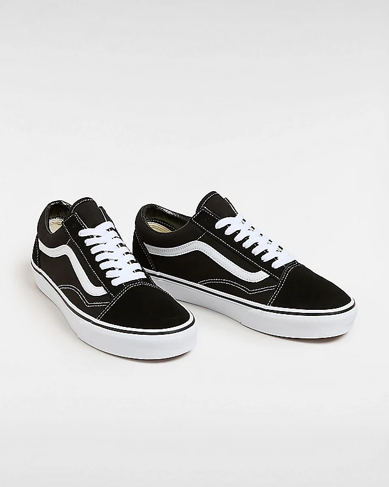

|  | Shoe Background:First known as the Vans #36, the Old Skool debuted in 1977 with a unique new addition: a random doodle drawn by founder Paul Van Doren, and originally referred to as the “jazz stripe.” Today, the famous Vans Sidestripe has become the unmistakable-and instantly recognizable-hallmark of the Vans brand. Constructed with durable suede and canvas uppers in a range of fresh colorways, the Old Skool pays homage to our heritage while ensuring that this low top, lace-up shoe remains as iconic as ever. It also features re-enforced toe caps, supportive padded collars, and signature rubber waffle outsoles. Color Style:-White/Black If you want to buy this Item Just go to:Vans Philippines |